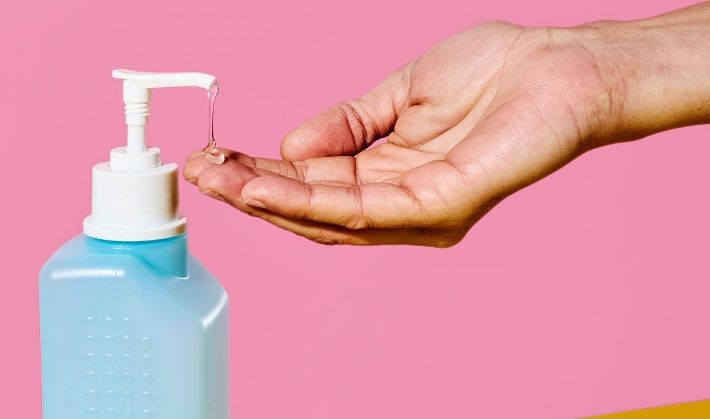
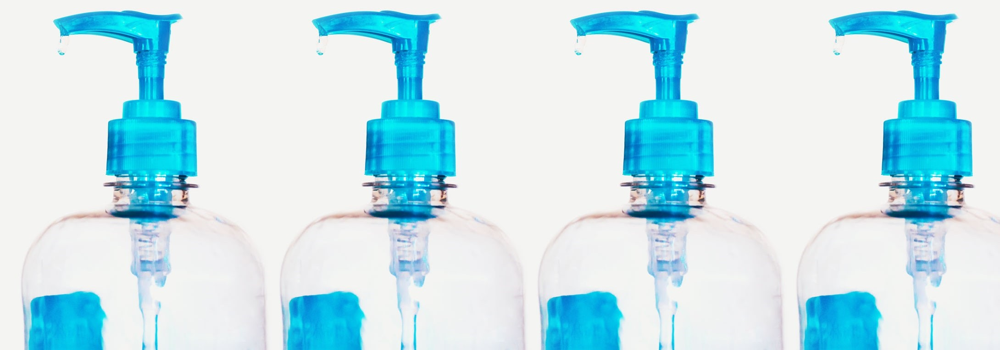

Touchless Automatic Hand Sanitizer Dispenser using:
Since the outbreak of COVID-19 hits the world dramatically, the use of hand sanitizers have escalated. Hand sanitisers can protect against disease-causing microbes.The main cause of COVID-19 spread is when virus-laden droplets from infected person get inhaled by other people. Recent studies show that we can also get this virus by touching surfaces or objects contaminated by the infected person and after that touching your face and nose can easily make you a target of it.This gives us a motivation to make a touchless automatic sanitizer dispenser.
First power the Ultrasonic sensor from Arduino.
Then connect the Echo pin to Arduino’s PIN 2.
Then connect the Trig Pin to Arduino’s PIN 3.
Step 4: Now connect Water Pump +ve to 13th Arduino PIN &GND (If you are using water pump of high spec, then don’t directly connect it to the Arduino’s 13th PIN).
Step 4: Now connect Water Pump +ve to 13th Arduino PIN &GND (If you are using water pump of high spec, then don’t directly connect it to the Arduino’s 13th PIN).
CODE
#define echoPin 2 // attach pin D2 Arduino to pin Echo of HC-SR04
#define trigPin 3 //attach pin D3 Arduino to pin Trig of HC-SR04
// defines variables
long duration; // variable for the duration of sound wave travel
int distance; // variable for the distance measurement
const int watrPump = 13;
void setup() {
Serial.begin(9600);
pinMode(watrPump, OUTPUT);
pinMode(trigPin, OUTPUT); // Sets the trigPin as an OUTPUT
pinMode(echoPin, INPUT); // Sets the echoPin as an INPUT
Serial.begin(9600); // // Serial Communication is starting with 9600 of baudrate speed
Serial.println("Ultrasonic Sensor HC-SR04 Test"); // print some text in Serial Monitor
Serial.println("with Arduino UNO R3");
}
void loop() {
// Clears the trigPin condition
digitalWrite(trigPin, LOW);
delayMicroseconds(2);
// Sets the trigPin HIGH (ACTIVE) for 10 microseconds
digitalWrite(trigPin, HIGH);
delayMicroseconds(10);
digitalWrite(trigPin, LOW);
// Reads the echoPin, returns the sound wave travel time in microseconds
duration = pulseIn(echoPin, HIGH);
// Calculating the distance
distance = duration * 0.034 / 2; // Speed of sound wave divided by 2 (go and back)
// Displays the distance on the Serial Monitor
Serial.print("Distance: ");
Serial.print(distance);
Serial.println(" cm");
if(distance <=7) //You can adjust the distance in cm { delay(300);//initial delay digitalWrite(watrPump, HIGH);//sets
the water pump high (ON) //delay(3000); // For setting the pump's delay for 3 sec } else digitalWrite(watrPump,
LOW); // To turn off the Water pump }